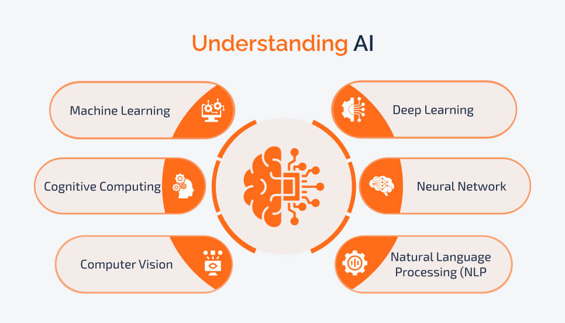
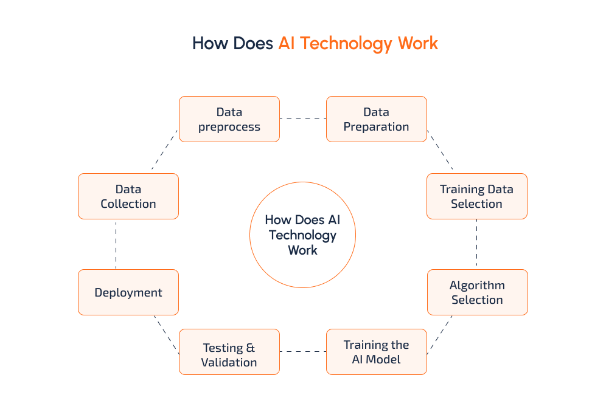
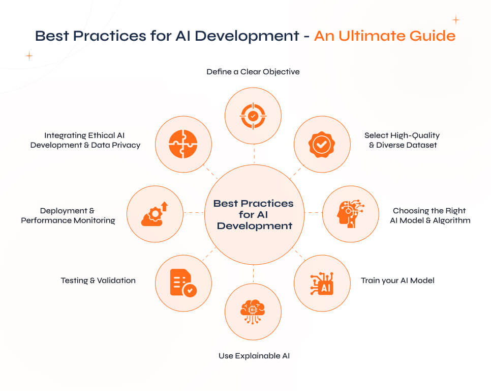
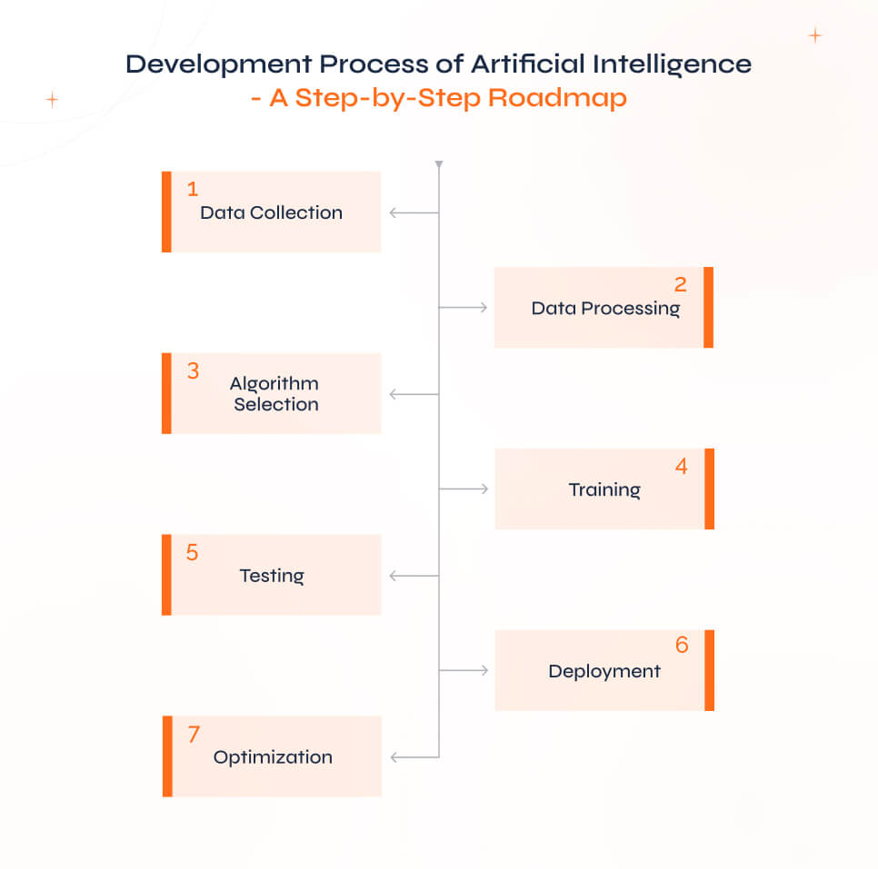
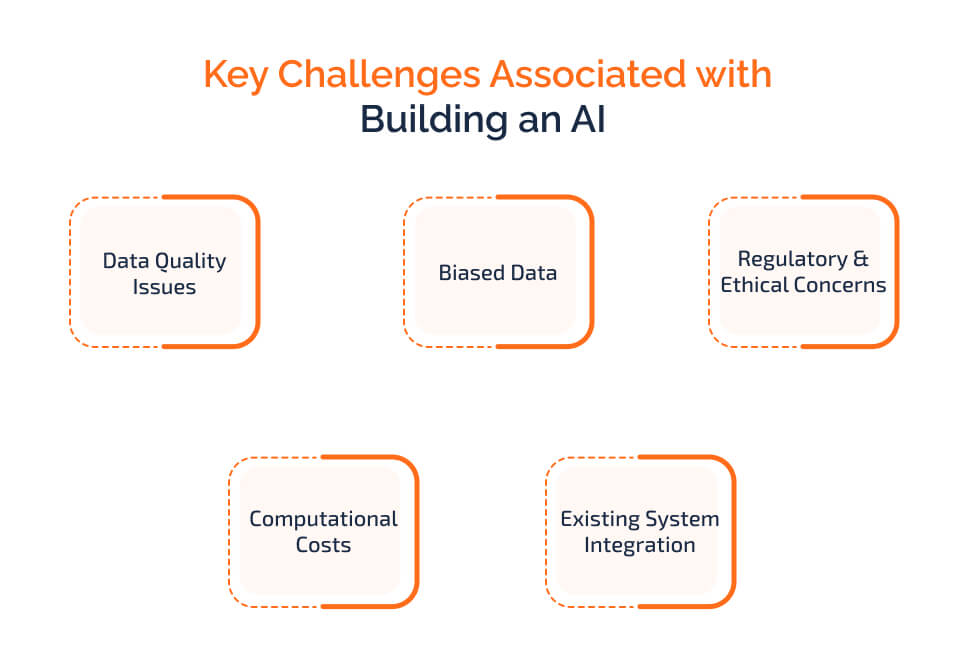
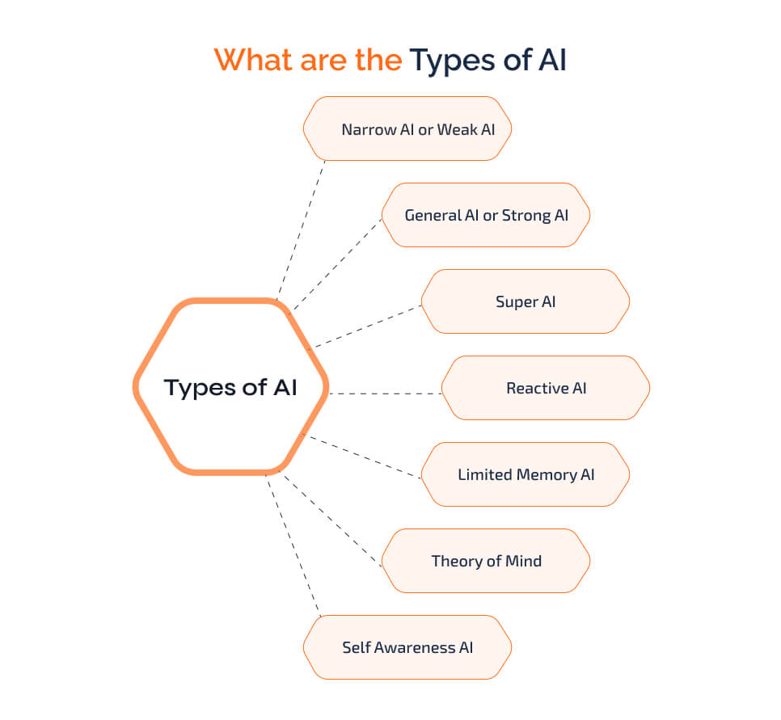
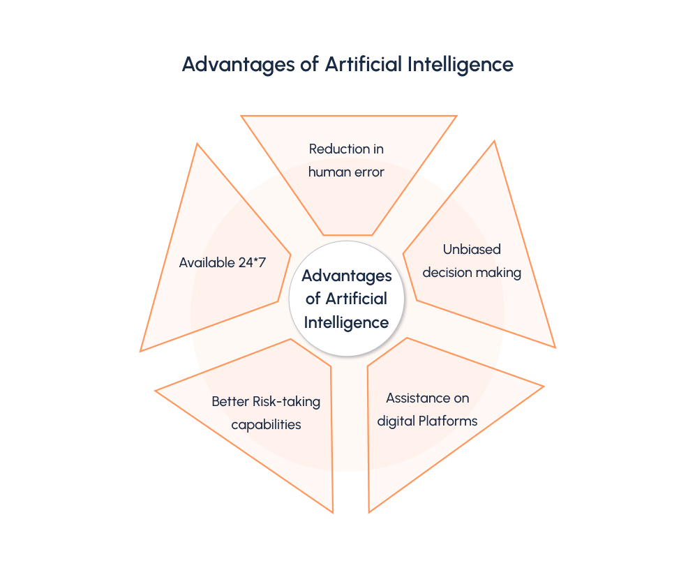
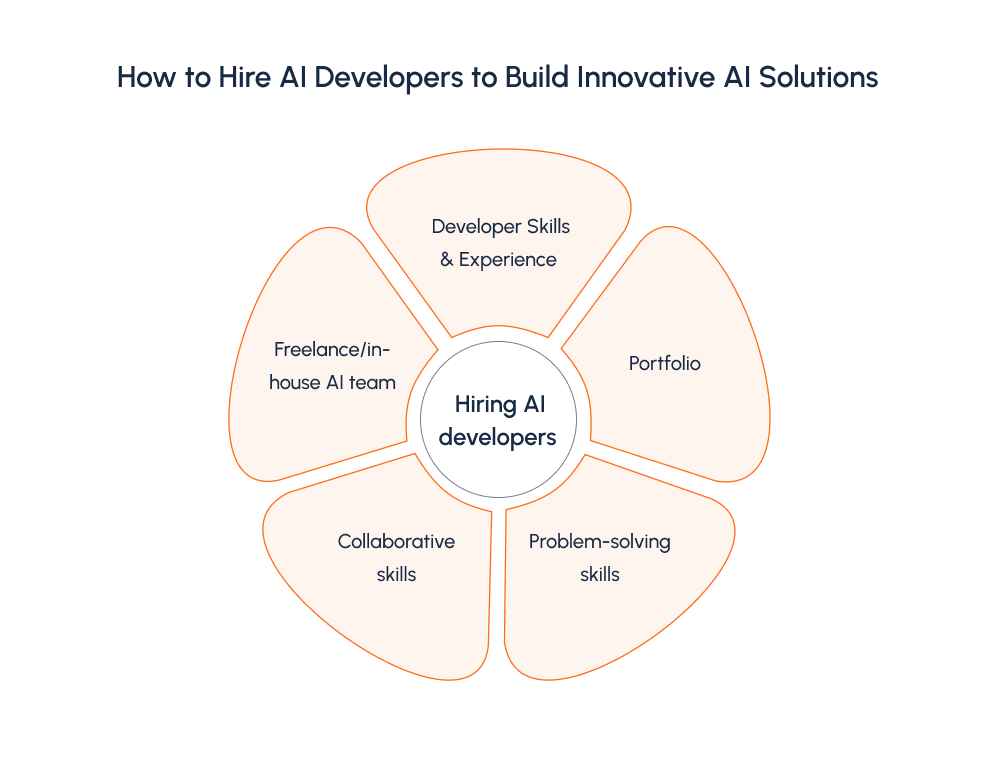

AI has been making its mark on almost all industries and changing the way they operate. It is reshaping the way businesses are operating, from streamlining business operations to intelligent decision-making and improvised user experiences. Thus, AI is not just an emerging trend, it's becoming an essential that businesses cannot ignore.
With all these advantages, crafting an AI-driven solution is more popular and widely adopted. However, to build an AI like ChatGPT and Deepseek, it is vital to understand certain factors that make developing the solution more effective and functional.
Whether you are developing an AI project for yourself or for your business, getting to know the fundamentals, the development process, deployment, scalability possibilities, and challenges associated with it is required.
This blog will uncover the entire AI development process in a simple-to-understand format while covering everything from the basic fundamentals of Artificial Intelligence development to maximizing efficiency and everything in between.
How to Build AI - From Data to Deployment
For building an AI solution like ChatGPT and Deepseek, you need to follow a step-by-step approach to make sure each stage is processed with accuracy. It starts from collecting large datasets to refining and obtaining quality data, choosing the right algorithm to train the model, deploying the solution, and maintaining the system for better performance.
Thus, it is vital for you to have a deeper understanding of the fundamentals in each phase of AI development. With this, you can make your AI solution perform better or more accurately. This approach not only works with your current requirements but ensures your AI solution is scalable and efficiently adapts to your growing needs.
You can enhance your business with AI book a call today
Understanding What is Artificial Intelligence (AI) and Its Impact?
Artificial Intelligence is a revolutionary technology that is designed and developed to mimic human-like intelligence. This implies machines with AI incorporation can perform tasks like humans from learning, reasoning, solving problems, making informed decisions, etc.
AI is built in such a way that it uses predictive analysis to analyze a larger set of data from the past, detect patterns, adapt to changing requirements, and improve over time. Thus, AI solutions are capable of handling even complex tasks that are otherwise difficult to perform by humans.

Over time, AI technology has evolved and it uses advanced algorithms like machine learning, deep learning, and neural networks. Machine learning allows AI to learn from data while deep learning and neural networks identify the pattern and make predictions.
AI has been predominantly playing an active role in our day-to-day life and chatbots used in many platforms are the most commonly found examples. Going ahead with innovation, AI has been incorporated in various industries and has been used in virtual assistants, self-driving cars, robots delivering foods, medical diagnostics, etc. Undoubtedly, AI is evolving and is shaping how we live and work.
How Does AI Work - A Step-by-Step Guide
The operational workflow of AI involves 7 different stages. It starts by processing a huge set of data collected over time using specialized algorithms to identify the patterns and make decisions for increased accuracy.

The first thing to focus on while developing an AI system is to identify the problem. If you have a clear understanding of the problem, you can focus on developing an AI that resolves it. This sets a strong foundation for the entire Artificial Intelligence development process.
As data is a major requirement to build a strong AI, you should ensure the data you have are diverse and high quality representing the real-world situation. During this stage, collected data will be cleaned, organized, and is made ready for the AI model to process.
Choosing the machine learning model is the next crucial step in developing an AI model. No matter what type of AI model you are intended to develop, choosing the right algorithm will effectively tackle the problem.
Train the AI using the data gathered after selecting the algorithm. Now, the AI model will gather the patterns and make predictions. It is an iterative approach and the model gets adjusted and restrained until it provides the most accurate result.
When the AI model is trained using an algorithm, it's time to test and analyze its performance. This ensures the model is ready for deployment and making reliable decisions. When the model doesn't provide the desired result, it will be retrained.
As a last step, the AI model will be integrated into a live system to let it handle the real-time problem. Meanwhile, continuous monitoring will be done to ensure that the model is working as expected and capable of adapting to changes.
Optimization is done on the model based on real-time feedback and data. Similarly, with regular updates, the ongoing issues get resolved and thus the AI model will perform the best.
Best Practices for AI Development - An Ultimate Guide
If you are looking forward to developing an AI model like ChatGPT or Deepseek, then it is important to choose the best algorithm, structure, and strategic plan for an accurate prediction. To achieve this, you shall follow the best practices provided below.

The first and foremost thing you should have while developing an AI model is to have a well-defined goal. As AI development is scalable, time and cost-taking, having a clear goal will save time, effort, and money.
Firstly, ensure your AI model is used to address a particular problem instead of being an experiment.
Secondly, it is important for your AI to serve not just as an advanced tool rather it should bring measurable improvements to your business operations. Lastly, by setting measurable success metrics, you will be able to track how well your AI model is performing.
Thus, setting up your business goal is possible and measurable with a clear objective.
The performance of your AI model depends on the data it is exposed to. So, when the data is incomplete, incorrect, or unclear, then the AI predictions will go wrong or become inaccurate. Thus it is vital to select the right dataset during the AI development for reliable and more accurate predictions.
Tips to select the right dataset:
You must ensure that the data quality is good by examining the dataset and it doesn't hold any errors, missing values, or irrelevant information.
By using diverse datasets, you can make your model learn the data from different perspectives, scenarios, and user ends.
Go ahead to process and clean the data as this removes duplicates, and incorrect or missing values. Upon cleaning, organizing, and structuring, your AI model learns the best of patterns and provides more accurate results.
It is important to choose the right AI model and algorithm as it leads to providing more accurate predictions that are more accurate, efficient, scalable, and solve real-world problems.
Given are the types of AI models and algorithms:
a. Supervised Learning : In supervised learning, the AI model is trained on labeled data or known results. This means the model learns to map the input to output based on the known answer. Some of the common algorithms include Linear or Logistic Regression, Decision Trees, Support Vector Machines, etc.
b. Unsupervised Learning : Here, the AI model works with unlabeled data. Thus, the algorithm finds new patterns, relationships, or structures in the data. Some of the common algorithms include K-means clustering, Hierarchical Clustering, Autoencoders, Principal Component Analysis, etc.
c. Deep learning : Deep learning involves processing many layers of data. as it is a subset of machine learning that uses neural networks. So, just like neurons, neural networks possess many layers and thus data processing takes deeper. Thus, the AI model trained with deep learning can handle complex tasks efficiently. Language translation and speech-to-text are some of the common use cases.
Some of the common algorithms include Natural Language Processing, Image Recognition, Convolutional Neural Networks, Recurrent Neural Networks, Generative Adversarial Networks, etc.
d. Semi-Supervised Learning : As the name goes, semi-supervised learning is a combination of both supervised (labeled data) and unsupervised (unlabeled data) learning. Here, the AI model will use a small amount of labeled data to guide learning from a large set of unlabeled data. Hence, it is useful only when labeling the data is pricey or time-consuming. Self Training and Label Propagation are the common algorithms examples.
For accurate results, you should train your model with data. Besides, it is important to refine the data from time to time for more precise results. With hyperparameter tuning, you can adjust parameters like learning rates, batch sizes, etc. Following that, test your model using separate datasets to measure accuracy. Lastly, check if the results are unbiased and accurate.
Most often, the decision-making process of an AI model may seem unclear. This can be resolved with the help of explainable AI (XAI) that makes AI-generated results in an understandable format. Thus, your model will gain the trust of users and thereby debugging errors seems easier. With the interpretable decisions of AI, the reliability, and accountability of businesses can be foreseen.
Perform a test before directly putting your AI model for deployment. With this, you will find out how well the model performs when handling real-world data and predict if it can handle unexpected inputs. Upon testing, you can find out if your AI model can adapt to growing business needs.
After testing, your AI model is deployed to handle real-time data. That's not the end as frequent monitoring on the AI model is required to find if it is performing well for any growing requirements. AI model's performance can be increased by monitoring the performance, detecting model drift, integrating real-time feedback, and implementing security updates.
It is important to make ethical AI practices while developing AI to prevent biases and protect data privacy. So, maintaining user consent and transparency on how the user data are used makes your business trustworthy.
Integrate AI agents into your business with our experts
Development Process of Artificial Intelligence - A Step-by-Step Roadmap
The following section outlines the step-by-step instructions and a clear roadmap for developing AI solutions.

AI works predominantly based on the data gathered from larger sets. This data comes from websites, user inputs, sensors, and so on. It can either be structured or unstructured data. i.e., it may be numbers, text, images, audio, videos, etc. Data collection forms a solid foundation since the quality and relevancy of the data are vital in forthcoming stages.
With the right data processing, AI models ensure you with the most accurate predictions. For this to take place, AI models classify those collected data based on categories such as those data that can be read by algorithms and those that cannot. In this stage, all the relevant data will be collected while eliminating the duplicates, cleaning up the errors, and filling the gaps. Now, the processed data will be transformed into a machine-readable format.
The next step is to select an algorithm to analyze the data that has been gathered and processed so far. It is to be noted that different algorithms are suited for different tasks. The different algorithms include machine learning, deep learning, natural language processing, neural networks, etc. The techniques involved in the process include matching, categorizing, clustering, prediction, regressing, etc. With the selected algorithms, AI will understand and process the data to make predictions or decisions.
In the training stage, the AI model feeds the processed data into an algorithm to learn and find the patterns to make better predictions. i.e., AI will adjust itself to process lots of data in such a way as to find out what works. Thus the accuracy keeps increasing over time with the AI model processing more accurate data.
When the training is done, the AI model needs to be tested using new data that the model hasn't seen so far. With this, it is possible to find out how well the AI model performs in handling real-time problems. Thus with testing, AI models are made to learn new patterns and make predictions for unseen data.
When the model doesn't perform well during testing, adjustments need to be made. i.e., retraining the AI with more data will be done to make it more reliable and produce accurate outputs.
After the testing stage comes the deployment where the AI model is ready to be used in real-world applications. During this stage, AI will be integrated into a website or software, or a device to make it perform the task. In simple terms, the deployment phase is nothing but moving the AI model from development to real-world use.
After the deployment, the AI model needs to be optimized regularly for better performance and accuracy. It's because, over time, the model will get access to new data. If the model isn't updated with fresh data, then the predictions may go wrong. Thus it's important to monitor and update the model with changing data. Similarly, there might be changes in the environment in which AI operates and this needs to be updated as well. Apart from these, AI models may not be performing as efficiently as they should be. This is when you need to optimize it with new data and conditions.
Key Challenges Associated with Building an AI
Building AI solutions does come up with a fair share of challenges. For an effective development of AI, it is important to understand the common challenges associated with it. With this, you will be able to innovate an AI model that is both efficient and ethical.

AI models predominantly rely on data to predict decisions. Thus, getting a quality dataset is vital for more accurate results. Incorrect decisions appear as a result of low-quality data. Some of the common data-related issues include incomplete data, outdated data, and biased data.
Developing complex AI models with the help of deep learning requires higher computational power. Thus to train the models using this algorithm, you need to have higher hardware specifications and cloud-based solutions, and above all this ends up consuming a larger amount of energy. Thus, you will have to pay a higher electricity bill while it harms the environment.
Any AI system will operate in such a way from the data it learned the pattern. If that dataset contains biases, the AI model delivering the solution will favor one section. This leads to inaccurate decision-making. In order to develop an unbiased model, you have to have a dataset for implementation obtained with different perspectives, users, etc.
Developing AI to work seamlessly with the existing technologies is a crucial process. While AI can work along with any software, website, or app, there occurs a challenge when integrating it with the existing enterprise systems. This includes software compatibility issues, data that cannot be accessed, etc.
It is vital for the AI to adhere to ethical and legal standards during and after the model development. This is seen as one of the challenges in developing AI solutions as it should comply with data protection regulations and maintain transparency on how data is handled.
The Best AI Development Tools for Building Intelligent Solutions
There are a variety of tools and frameworks available for the development of AI solutions. With the tools, developers can build, train, test, and deploy the AI models. The most widely used development tools are as follows:

What Are the Types of AI - Know its Classifications
AI has a broad range of classifications based on how it functions. The major types of AI are as follows:

As the name goes, Narrow AI performs specific tasks with the highest level of proficiency. While it is the most commonly used AI, it cannot perform tasks beyond its programming point. You can consider Virtual Assistants like Siri or Alexa and facial recognition as examples of Narrow AI.
This is an advanced type of AI that can perform intellectual tasks like humans. i.e., it can think, resonate, and learn just like humans do. Unlike Narrow AI, it can understand, reason out, and solve complex problems as humans. Above all, it can adapt to any new situation and make independent decisions. Hence, it can operate beyond its programming point. The cache with General AI is still a concept and remains a future possibility as scientists are in the process of developing it.
Super AI is a futuristic concept where the model can act in a way smarter than humans at a faster rate. This AI can understand emotions and make independent decisions that will be beyond human ability. It is just an idea and doesn't exist. However, if developed, we could expect a major transformation in the science and tech industry.
The following are the types of AI classified based on functionalities
This AI is designed to work in the present moment based on the pre-programmed algorithm. Reactive AI models will not rely on past experiences to respond to specific situations.
Systems with limited memory AI rely on historical data and are designed to learn from past experiences and use the pattern to make better decisions in the future.
This model is under development and aims to understand human emotions, intentions, desires, etc. When developed, this would allow machines to get involved in more human-like interactions.
It is like Super AI and is an advanced stage that is built to possess self-consciousness and awareness. Thus, this AI model will be capable of reacting to emotions like humans.
Key Features of Artificial Intelligence that Makes Powerful Models
AI has been a game changer across industries and the key features associated with it are as follows:
1. Learning Ability - AI systems keep on refining their accuracy and predictions as they process more data.
2. Reasoning and Decision Making - AI processes data to identify patterns and possibilities to provide better decisions based on logical analysis.
3. Automation - With AI, performing automating repetitive tasks has been made faster, efficient, and simpler without requiring human intervention.
4. Adaptability - AI systems keep evolving and hence don't follow a set pattern or rules. With a growing set of new data and changing environments, the AI models will keep adapting and evolving.
5. NLP - AI can understand and interpret human language with the help of Natural Language Processing or NLP features. With this, communication between humans and machines becomes seamless.
6. Computer Vision - AI can recognize images and videos like the human eye with the help of computer vision. Thus, AI can extract insights upon analyzing visuals.
Some Unmatched Advantages of AI That Drive Efficiency & Decision Making
AI is transforming industries and the numerous advantages that exist in using it are as follows.

1. With AI, efficiency, and automation are best achieved and thus require less human intervention.
2. A large set of data is processed in seconds and thus AI makes faster decisions than humans.
3. It brings more accurate results and thus businesses can act quickly.
4. Unlike humans, it can operate round the clock without breaks ensuring business operations run smoothly all the time.
5. AI solutions support personalization by bringing in better recommendations as per individual needs.
6. AI models are less prone to errors while human-made mistakes arise during data processing, decision-making, etc.
7. AI systems continuously learn new data, uncover hidden insights, and adapt to growing trends.
Artificial Intelligence with Real-World Examples
AI is making a real impact on various industries. Take a look at the sectors it has been used.
1. Healthcare - Doctors rely on AI-powered diagnosis tools to detect diseases faster and more accurately.
2. Finance - AI has been predominantly used by banks and financial institutions to identify unusual patterns to prevent fraudulent activities.
3. Retail - Customer service has been improved with the help of AI chatbots as they offer customized recommendations.
4. Manufacturing - With AI's predictive analysis, factories are analyzing the performance and fixing major issues. This in turn reduces operational costs and downtime.
5. Automated Vehicles - AI is used in self-driving cars that drastically improve vehicle automation and safety.
6. Cybersecurity - AI systems monitor network security and block potential attacks and cyber threats.
Factors Contributing to the AI Development Cost
The AI development cost varies based on multiple factors. It includes but is not limited to the complexity of the AI system, data, infrastructure, trained developers, and customizations.
i.e., a simple AI agent development such as a chatbot is affordable while a complex model with deep learning costs high. Similarly, high-quality data is not free. Powerful AI models require higher GPU servers and cloud-based solutions. The cost of AI development becomes higher upon hiring trained developers. Above all, a fully customizable AI solution costs high as it takes extra time, effort, and resource allocation.
Know the Use Cases of Artificial Intelligence
Listed down are some of the real-world applications of AI used across different industrial sectors:
- Chatbots
- Virtual Assistants
- IoT based Smart Home Devices
- X-rays, MRIs
- Fraud detection in banks and financial institutions
- Predictive analytics used to find customer behavior and market trends.
- GPT models used for creating content
Future of AI Development - What Lies Ahead?
With the rapid evolution of AI, we could find the models making leaps and bounds driving advancements across different industries.
The future of Artificial Intelligence development includes but is not limited to
1. Quantum Computing - Faster problem-solving with quantum-powered AI.
2. Healthcare - Predicts diseases before symptoms appear
3. AI-powered Robotics - Smarter automation in manufacturing, logistics, and surgeries
4. Ethical AI Development - Strict AI regulations to prevent bias and data misuse
5. Human AI Collaboration - Enhances human productivity rather than replacing jobs
6. Self-Learning AI - Adapts and improves without human intervention
How to Hire AI Developers to Build Innovative AI Solutions
In order to develop powerful and efficient AI solutions, any of the AI Development companies should meet the following criteria.

Hiring an experienced AI developer with proficiency in Python, TensorFlow, PyTorch, and machine learning algorithms is vital. Thus, the developer can effortlessly handle data processing, training, and deployment. Ensure the developer has a good portfolio that showcases his expertise level in AI models he has worked on. Checking the problem-solving ability is important as a skilled developer can tackle complex data challenges and performance issues to bring in more accurate results. Whether you choose a freelancer or an in-house developer, he must have strong communication and experience working in a collaborative environment.
Why Choose Sparkout Tech to Build AI Solutions?
Selecting the right AI development company is crucial for deploying AI solutions that drives real business growth. As a leading AI development company, Sparkout Tech combines technical expertise and strategic planning to craft AI solutions that are intelligent, scalable, and result-driven. Our approach ensures the AI-driven solutions are not just innovative but also practical and future-ready.
- Expert AI consultants
- Cutting-Edge Technology
- Custom-Made AI Solutions
- Seamless AI-Human Collaboration
- Scalable AI Implementation
- Ethical & Secure AI
- End-to-End AI Support
Whether you aim to streamline your business operations, make data-driven decisions, or enhance customer engagement, choose Sparkout Tech as your reliable AI development company.
Final Thoughts on Building AI
Building AI is no longer rocket science as long as you have a clear understanding of its fundamentals, the right tools, and a strategic approach to overcome the challenges. The advantages of using AI systems outweigh the challenges that come with it thus making them a game changer in businesses. As the future of AI is evolving rapidly, businesses can rely on the best AI developers and Ai consulting companies for better growth, streamlined operations, and to stay ahead of the competition.
Technical Architect
At Sparkout Tech Solutions, we believe in the power of collaboration. I take pride in fostering a team culture that encourages open communication, knowledge sharing, and continuous learning. In the ever-evolving tech landscape, I am committed to staying at the forefront of industry trends. This commitment allows us to deliver solutions that not only meet but exceed our clients' expectations